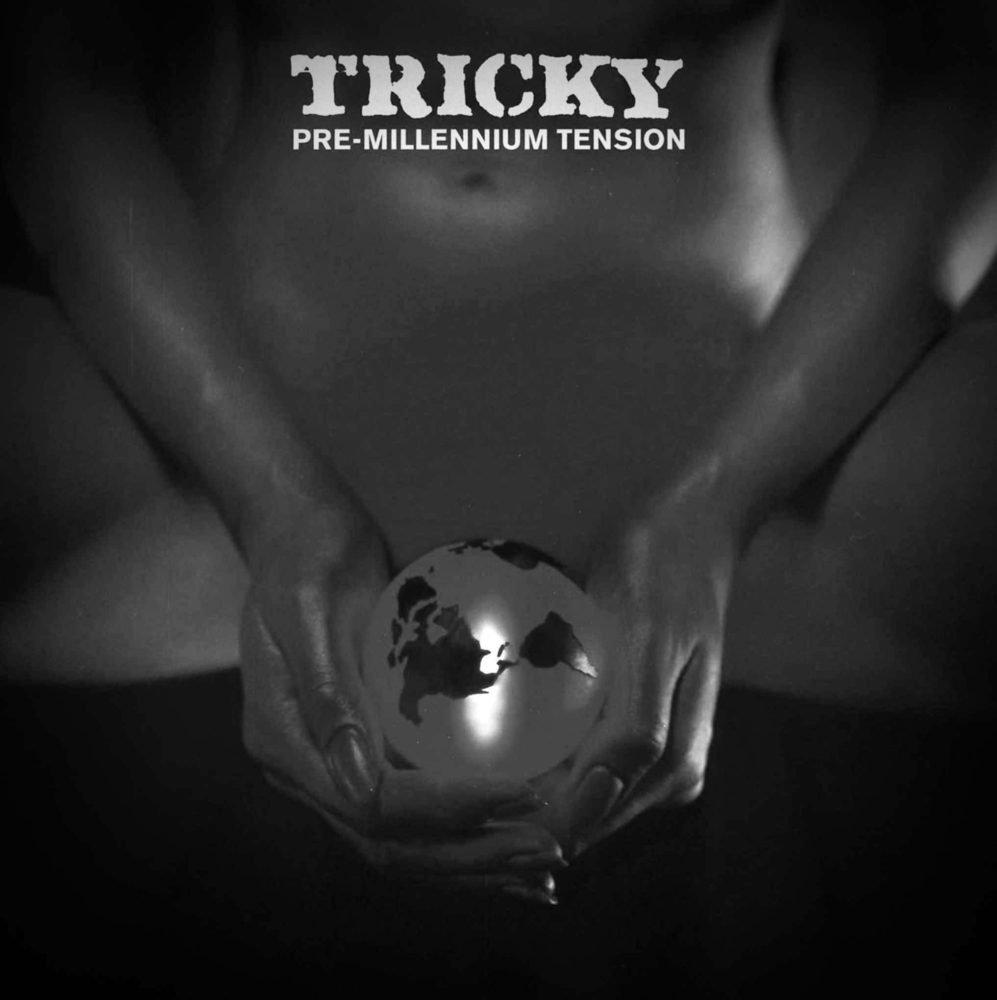

TRICKY

The Dark Prince of Trip-Hop
Adrian Thaws, better known as Tricky, brought a claustrophobic, mumbling intensity to the genre, blending hip-hop with punk and avant-garde.
Discography

Adrian Thaws, better known as Tricky, brought a claustrophobic, mumbling intensity to the genre, blending hip-hop with punk and avant-garde.
